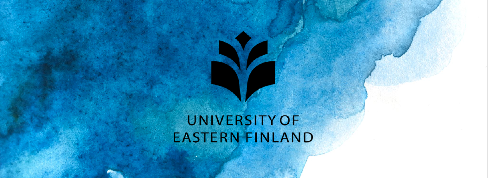

A small but exciting journey...
Click here to download the brief pdf version of my resume!
Fatima Rabia Yapicioglu received the BSc degree in computer engineering from Ankara University Engineering Faculty including exchange studies at the University of Eastern Finland Computing School, in 2021, and currently a MSc student at the University of Padova, Italy. She earned Ministry of Foreign Affairs and International Cooperation scholarship for two consecutive years, and has been awarded with 'Mille e una Lode' honor degree and best machine learning project from Galileo Galilei Physics of Data Department of UNIPD during her MSc studies. She is currently doing research in collaboration with Kings College, London on dopamine hormone brain lateralization in healthy controls and schizophrenia patients compromising XAI(Explainable Artificial Intelligence). Her past experience includes contributing to medical applications and artificial intelligence convergence at the ICT Medical Development Center of the Kuopio University Hospital, Finland. Currently, she works as an artificial intelligence specialist intern at the Baker Hughes American company which has subsidiaries GE and Bently Nevada. Her main research interests lie predominantly in the field of artificial intelligence for life sciences and health applications, explainable artificial intelligence, computer vision, time series analysis , and machine learning.
Education

The University of Padova (Università degli Studi di Padova)
Italy, Master's(September 2021- June 2023) I am following Machine Learning for Industrial Applications, Life and Health track, GPA: 28/30. 90/120 credits completed, only internship and thesis studies are going on. I had courses and developed projects which comprises Machine Learning, Artificial Neural Networks and Deep Learning, Digital Signal Processing, Human Data Analytics, Human Computer Interaction, Foundations of Databases, Programming for Telecommunications and more. You can visit the department page for more information as follows UNIPD & MIME. Also to reach course contents and projects that I developed you can visit Projects tab.
GPA: 28/30. Thesis title is ‘Dopamine Lateralization on Brain differs in Healthy Controls and Schizophrenia Patients: An Explainable Artificial Intelligence Perspective’ under supervision of Mattia Veronese, Assoc. Prof Unipd.
The University of Eastern Finland (Itä-Suomen Yliopisto )
Finland, Bachelor's Exchange Experience (September 2019- June 2020) I've spent years 2019-2020 at the University of Eastern Finland studying Computer Science in Joensuu-Kuopo campuses. The courses that I mainly focused on are Artifical Intelligence, Deep Learning, Design and Analysis of Algorithms, Software Engineering, Research Method, Industrial Project, and more. I also had internship in the course of Industrial Project in collaboration with the Kuopio University Hospital, Finland gained experience in the field of medical data analysis such as biomarkers and clinical psychological and physiological data. Researched the topic of ‘Synchronization and Analysis of Biomarkers Data Under Noise and Stress’ under supervision of Hana Vrzakova, PhD. Head of Medical ICT Development Center, Kuopio University Hospital, Finland.
Ankara University
Turkey, Bachelor's Joint Degree (September 2019- June 2020) I spent years between 2016-2018 studying Computer Engineering bachelor's degree at Ankara University. It is known as one of the most successfull and the first university of Rebuplic of Turkey founded by Ataturk. Starting with the fundamental computer programming languages C/C++, and computer architecture the department is focused on object oriented programming languages, algorithms and artificial intelligence applications. I worked in collaboration with Ankara University Dentistry Faculty for the early detection of TMJ(Temporomandibular Joint) Disorder from MRI images by utilizing transfer learning technique of deep learning & computer vision applications. For more information please click on here AU - CE.